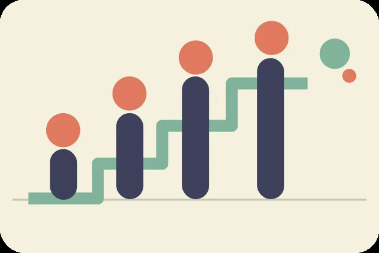

Сравнивать страны — значит видеть контекст
Средние оценки различаются даже у соседей по рейтингу. Сервис позволяет сопоставить динамику отдельных годовых наблюдений и шесть вкладов факторов в отчёте 2024 года. Это два самостоятельных способа анализа.

Сформируйте сравнение
Загрузка списка стран…
Годовая оценка жизни по шкале 0–10
График строится только по годовому ряду 2005–2023. Опубликованное значение рейтинга 2024 не добавляется как точка 2024 года.
Сравнение показателей 2024 года
Шесть чисел характеризуют статистические вклады факторов в оценку, а не непосредственно ВВП в денежных единицах, ожидаемую продолжительность жизни в годах или проценты доверия.
Что можно сказать после сравнения
После выбора стран здесь появится заключение на основе доступных наблюдений.
При анализе важно разделять описательные выводы и объяснение причин. Наличие связи между факторами и оценкой жизни само по себе не позволяет установить направление причинно-следственной зависимости. На различия могут влиять контекст опросов, состав выборки и условия жизни, которые не представлены напрямую в наборе.

Разобраться в шести факторах
На отдельной странице показаны определения, связи и условный персональный калькулятор, который не заменяет реальные оценки стран.